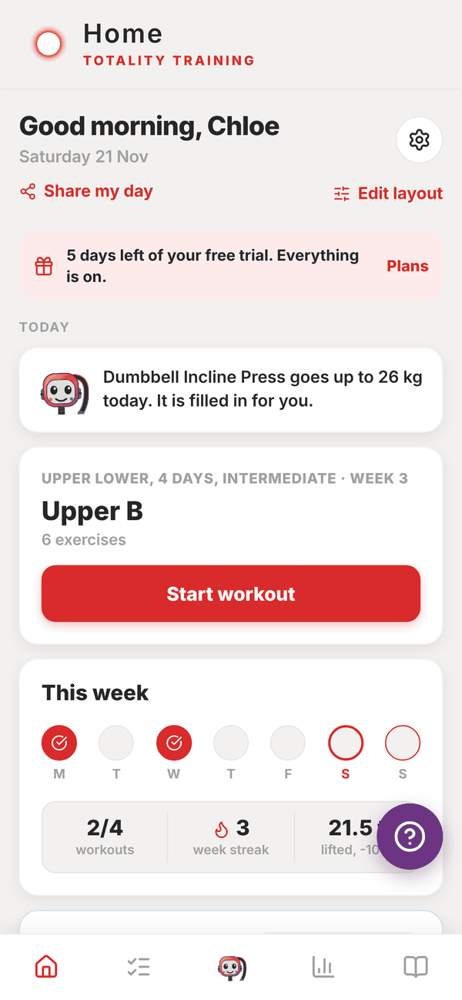

Totality Training guide
Start here
What Totality Training does, what Free and the paid plans include, and the quickest way to get going.
Totality Training is a workout tracker for people who train on their own. You follow a programme, log every set, and the app adjusts your weights and your sets from how you actually trained. It runs in your web browser at totality-training.vercel.app, on a phone or a computer. The iPhone and Android apps were sent to Apple and Google for review on 21 November 2026. Your account is the same everywhere, and it is the same login as Totality and Totality Nutrition.

The plans#
- Free A$0. Unlimited workout logging, the full exercise library with demos, 3 of your own routines, Strength Foundations and the Health Guidelines programmes, 3 questions for Tali a day and Sleep sounds.
- Training A$8.99 a month or A$91.70 a year. All 420 Totality programmes, unlimited routines, weights that go up by themselves when you earn it, sets that adjust to how each muscle feels, Progress (strength charts, personal bests and body stats) and the weekly review.
- Training + AI A$11.99 a month or A$122.30 a year. Everything in Training, plus Tali builds programmes around your week and kit, gives her take after each workout and writes up your week. 100 Tali credits a month.
Every new account starts with a 7 day free trial Trial of everything in Training + AI. No card is needed. When it ends you move to Free unless you pick a plan, and nothing you logged is deleted. See Plans and billing.
Get going in five minutes#
- Open totality-training.vercel.app and tap Start free. Enter your first name, email and a password. See Create your account.
- Answer four quick questions: your goal, how long you have been lifting, your week and where you train.
- Check the programme it matched for you and tap Start this programme.
- On Home, tap Start workout when it is a training day. See Doing a workout.
- After your workout, answer How did that feel? so next week's sets fit. See After a workout.
Where things live#
The bar along the bottom has five buttons:
| Button | What it is |
|---|---|
| Home (house) | Today's workout, this week, today's food from Totality Nutrition and Quick access. See Home |
| Train (list) | Your programme, the templates, Tali's builder, your routines and My programmes. See Choose a programme |
| Tali (her face, in the middle) | Chat with Tali about your training. See Tali |
| Progress (chart) | Strength charts, body weight, measurements and photos Training. See Progress and history |
| Exercise library (book) | Every exercise with demos and cues. See Exercise library |
Settings opens from the gear at the top of Home. The purple ? button on most screens lets you report a problem.
Questions#
Is Totality Training really free?
Yes. The Free plan is A$0 with no time limit. You keep unlimited logging, the exercise library, 3 routines, Strength Foundations and the Health Guidelines programmes, and 3 questions for Tali a day.
Do I need a card for the trial?
No. The 7 day trial needs no card. If you don't pick a plan, you move to Free when it ends.
I already use Totality Nutrition. Do I need a new account?
No. Log in with your Nutrition email and password. Your weight, measurements and photos come with you, and paying for Nutrition makes Training 40% off. See With Totality Nutrition.
Can I use it on my computer?
Yes. Open totality-training.vercel.app in any browser and log in.